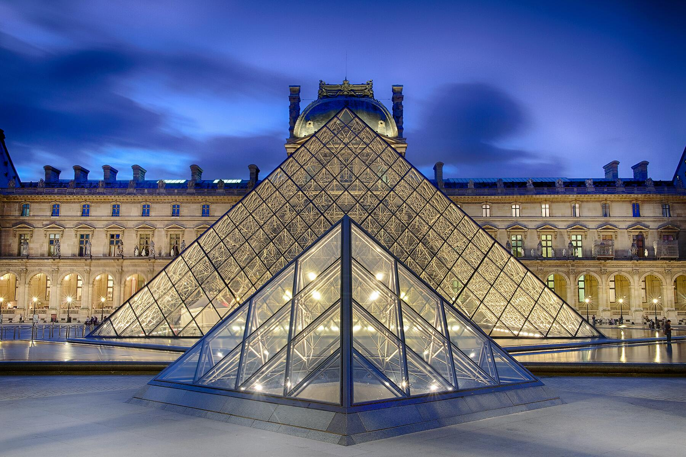
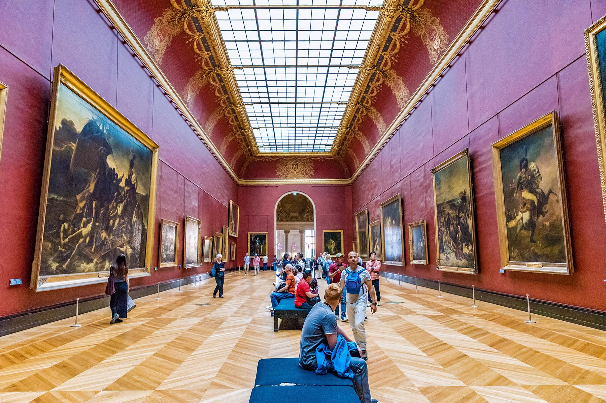
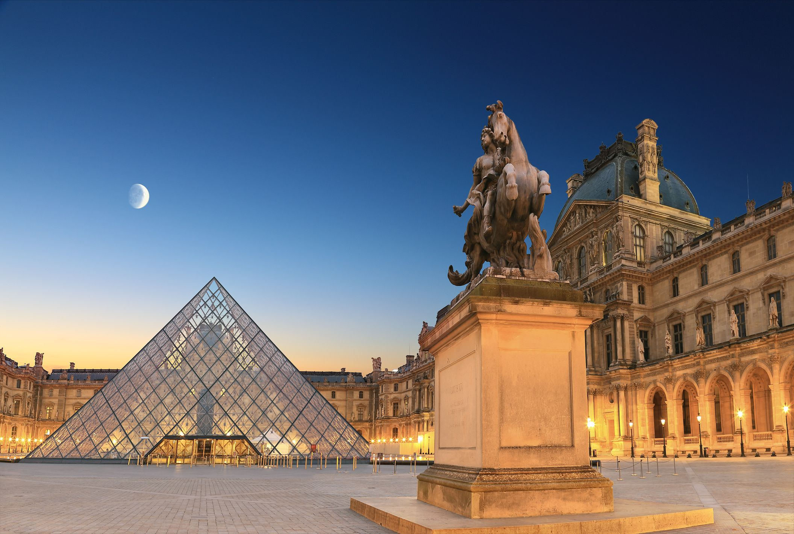
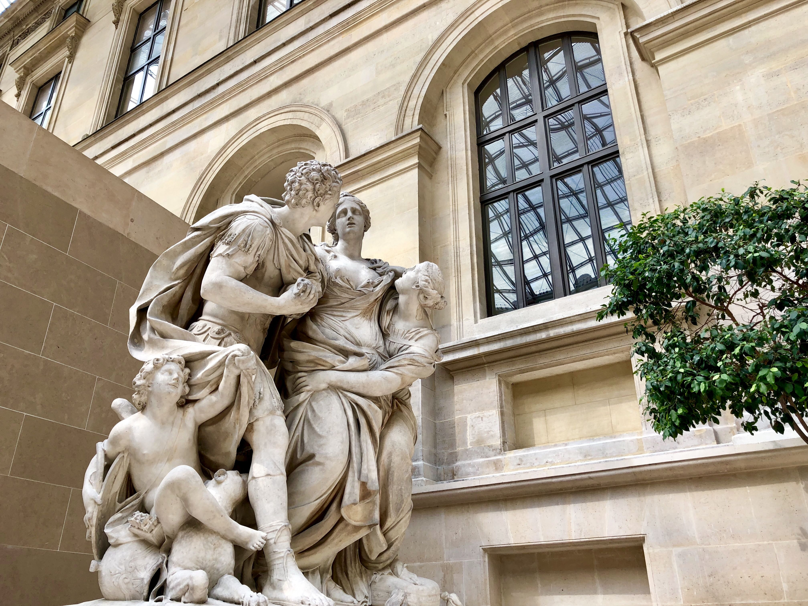
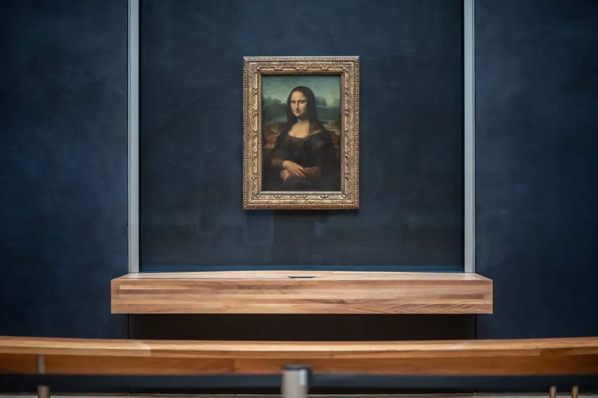

Originally built as a medieval fortress in the late 12th century, the Louvre MuseumClick to open side panel for more information has evolved over 800 years into the world’s largest and most visited art museum. Located on the Right Bank of the Seine, this former royal palace now houses over 35,000 works of art across 15 acres of gallery space. Its transformation from a defensive stronghold to a Renaissance palace, and finally to a public museum during the French Revolution, makes it a living chronicle of French history and global artistic achievement.

The architecture of the Louvre MuseumClick to open side panel for more information is a stunning blend of styles. In the museum's basement, you can still walk alongside the medieval stone walls and the remains of the original moat. Above ground, the grand Renaissance and Baroque facades showcase centuries of royal expansion, culminating in I.M. Pei’s Glass Pyramid. Completed in 1989, the pyramid serves as a modern, light-filled entrance that creates a bold contrast with the surrounding historic stone wings.


The Denon Wing: Masterpieces and Modern Drama As the most visited section of the museum, the Denon Wing serves as the "rockstar" gallery, housing global icons like Leonardo da Vinci’s Mona Lisa and the Winged Victory of Samothrace. Beyond these famous faces, the wing features the stunning Galerie d'Apollon, a gold-encrusted hall that inspired the Hall of Mirrors at Versailles and serves as the home of the French Crown Jewels. Interestingly, this gallery became the center of world news very recently; in October 2025, a brazen daylight heist saw thieves escape with jewels worth an estimated €88 million. While the museum has since bolstered security, the wing remains a breathtaking journey through the emotional intensity of Italian Renaissance and French Romantic art.
The Sully Wing: Medieval Roots and the Pharaohs' Legacy For a change of pace, the Sully Wing offers a literal journey through time, starting in the basement where you can walk alongside the original medieval foundations and moat of the 12th-century fortress. This wing is the historical heart of the palace and houses the world-renowned Egyptian Antiquities collection, including the enigmatic Great Sphinx of Tanis and the Seated Scribe. As you ascend, the architecture shifts into the elegant Salle des Caryatides, a Renaissance ballroom filled with Greek and Roman sculptures like the Venus de Milo. It’s a quieter, more contemplative space that reveals the Louvre's evolution from a defensive stronghold to a sanctuary for ancient civilizations.


The Richelieu Wing: Mesopotamian Might and Imperial Opulence Often the least crowded of the three, the Richelieu Wing contains some of the museum’s most impressive large-scale treasures and lavish interiors. Here, you can stand before the Code of Hammurabi, one of the oldest deciphered writings of significant length in the world, and marvel at the towering Winged Human-Headed Bulls from the palace of Sargon II. For a glimpse into a much later era of power, the wing also hosts the Napoleon III Apartments, which are preserved in their original Second Empire opulence with massive crystal chandeliers and velvet-draped ballrooms. It is also the best place to view the Islamic Art collection, housed under a striking, undulating golden roof that resembles a floating veil in the Visconti Courtyard.

The World's Most Famous Face: Mona Lisa
Painted by Leonardo da Vinci between 1503 and 1519, the Mona Lisa is the star of the Louvre. She is famous for her enigmatic smile and Leonardo’s use of sfumato, a technique that creates soft, smoky transitions between colors.
Though surprisingly small in person, the portrait gained global legendary status after a famous theft in 1911. Today, she is displayed behind bulletproof glass in the Salle des États (Denon Wing, Room 711).